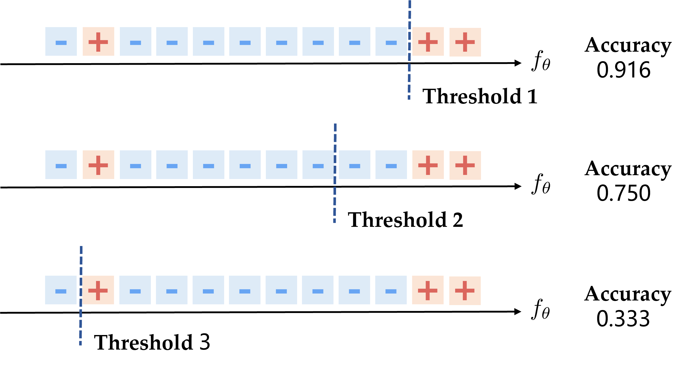
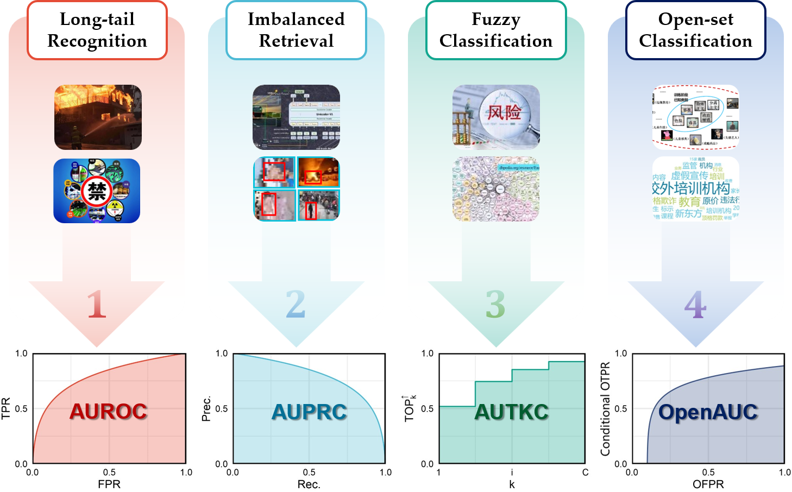
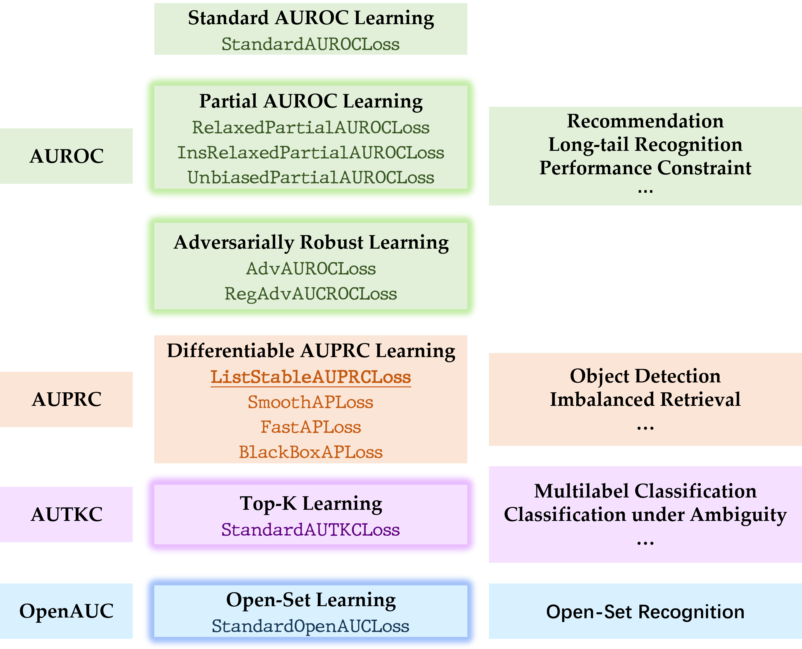

XCurve: Machine Learning with Decision-Invariant Metrics
End-to-end Training Solutions for Decision-Invariant Models
Download
[2023-07]
XCurve 1.1.0 is released!
Difficulties in High-Stake Decision-Making
Recently, machine learning and deep learning technologies have been successfully employed in many
complicated
high-stake decision-making
applications such as disease prediction,
fraud detection, outlier detection, and criminal justice sentencing.
All these applications share a common trait known as
risk-aversion
in economics and finance terminologies. In other words, the decision-makers tend
to have an
extremely low risk tolerance. Under this context, decision-making parameters
will significantly affect the performance of models. For example, in binary classification problems,
we use the so-called classification threshold as the decision parameter. In the following examples,
we see that changing the threshold leads to significantly different model performances.

XCurve Framework
In risk-aversion problems, the decision parameters change dynamically in deployment time. Hence, the goal of X-curve learning is to learn high-quality models that can adapt to different decision conditions. Inspired by the fundamental principle of the well-known AUC optimization, our library provides a systematic solution to optimize the area under different kinds of performance curves. To be more specific, the performance curve is formed by a plot of two performance functions $x(\lambda), y(\lambda)$ of decision parameter $\lambda$. The area under a performance curve becomes the integral of the performance over all possible choices of different decision conditions. In this way, the learning systems are only required to optimize a decision-invariant metric to avoid the risk aversion issue.
Four Kinds of Performance Curves

Outline
The core functions of this library includes the following contents
